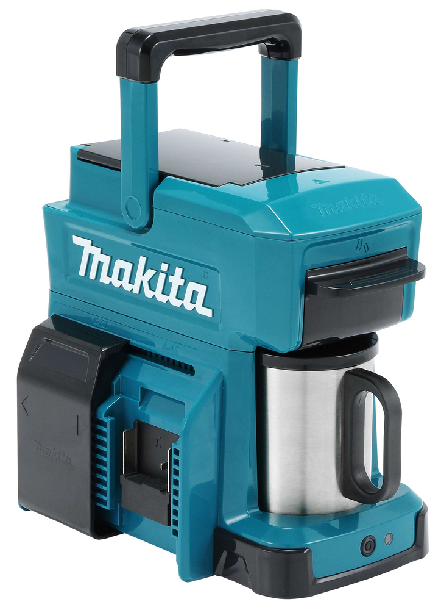

COMPATIBILIDAD
Pensada para funcionar con las mismas baterías de tus herramientas.

La cafetera portátil Makita DCM501 combina autonomía, resistencia y practicidad para acompañarte donde sea que estés.
Diseñada para funcionar con las baterías de la línea Makita y transportarla a cualquier parte.
Pensada para funcionar con las mismas baterías de tus herramientas.

Pequeña, liviana, resistente y pensada para fácil transporte.

En 5 minutos tenés tu café caliente listo para disfrutar.

Llená el depósito con agua limpia hasta el nivel indicado para asegurar un café perfecto.

Colocá tu café molido favorito sin marca en el portafiltro reutilizable original.

Encajá la batería Makita LXT en el compartimiento lateral correcto para darle energía.

En apenas 5 minutos, tu café caliente está listo en la taza de acero original Makita.

